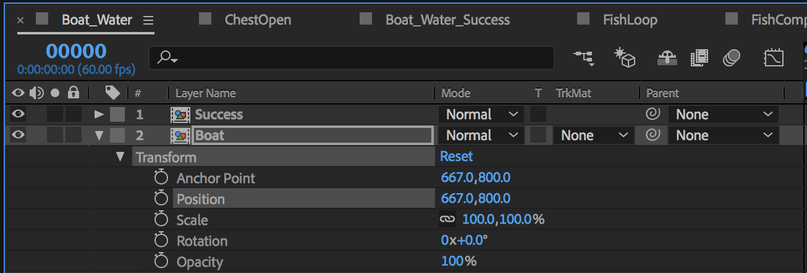

Changing Animations At Runtime
Lottie can do more than just play beautiful animations. Lottie allows you to change animations at runtime. Changing animations is done through Lottie's dynamic properties API. The dynamic properties API features a class for searching through animation data, LOTKeypath, a protocol for setting animation data LOTValueDelegate, several helper objects for common animation scenarios LOTValueCallback, LOTBlockCallback, LOTInterpolatorCallback, and finally a method for setting animation delegates on LOTAnimationView setValueDelegate:forKeypath:.
LOTKeypath
To understand how to change animation properties in Lottie, you should first understand how animation properties are stored in Lottie.
Animation properties are stored in a data tree that mimics the information heirarchy of After Effects. In After Effects a Composition is a collection of Layers that each have their own timelines. Layer objects have string names, and their contents can be an image, shape layers, fills, strokes, or just about anything that is drawable. Each object in After Effects has a name. Lottie can find these objects and properties by their name using a LOTKeypath. A LOTKeypath is an object initialized with a list of String names. LOTKeypath is used to search the backing animation data for properties and objects. Keypath string names should match the names used for layers and objects in the animation data.
Wildcards (*) and Globstars (**) can be used to search through keypaths. Wildcards will search through a single depth layer, globstars will search any depth.
Creating a LOTKeypath
LOTKeypath is initialized with either a list of strings (Objective-C only), or a single dot-seperated string.
As an example, lets say we have an animation with a layer named Boat and we want to target its Position property.

We can search for it explicitly by creating a keypath that targets Boat.Transform.Position
Swift
let keypath = LOTKeypath(string: "Boat.Transform.Position")
Objective-C
LOTKeypath *keypath = [LOTKeypath keypathWithKeys:@"Boat", @"Transform", @"Position", nil];
// ----OR-----
LOTKeypath *keypath = [LOTKeypath keypathWithString@"Boat.Transform.Position"];
Using Wildcards
Suppose you are interested in changing the color of any shape group named Fish in the Animation. You can do this with Globstars, or double wild cards.
Swift
let keypath = LOTKeypath(string: "**.Fish.Fill.Color")
Objective-C
LOTKeypath *keypath = [LOTKeypath keypathWithKeys:@"**", @"Fish", @"Fill", @"Color", nil];
// ----OR-----
LOTKeypath *keypath = [LOTKeypath keypathWithString@"*.Fish.Fill.Color"];
LOTValueDelegate
LOTValueDelegate is a collection of 5 protocols used to provide new animation data for a given LOTKeypath search.
A value delegate is called every frame while an animation plays and requests the override data for the given property. The delegate is given the current frame of the animation, and the animation property's current data. If animation already existed for the property the delegate is given the leading and trailing keyframe as well as the current interpolated progress. Each of the 5 protocols returns a different type of animated data.
The protocols are LOTColorValueDelegate, LOTNumberValueDelegate, LOTPointValueDelegate, LOTSizeValueDelegate, LOTPathValueDelegate.
Predefined LOTValueDelegate Objects
Lottie contains several predefined objects that conform to LOTValueDelegate that support a number of basic operations. There are three types of objects, LOTValueCallback, LOTBlockCallback, and LOTInterpolatorCallback. Each type contains an object for a specific data type. Example LOTValueCallback contains LOTNumberValueCallback, LOTColorValueCallback, etc.
LOTValueCallback
LOTValueCallbacks are used to simply set a value. Each object has a property for its data type that can be set. While the animaiton is playing, Lottie will set the keypath to the value specified by the value callback. There are 5 different value callback objects: LOTColorValueCallback, LOTNumberValueCallback, LOTPointValueCallback, LOTSizeValueCallback, LOTPathValueCallback.
Example:
Swift
let colorCallback = LOTColorValueCallback(color:UIColor.blueColor.CGColor)
Objective-C
LOTColorValueCallback *colorCallback = [LOTColorValueCallback withCGColor:[UIColor blueColor].CGColor];
LOTBlockCallback
LOTBlockCallback is similar to valueCallback, but instead holds a block or closure that is called every frame for the property. There are 5 different block callback objects: LOTColorBlockCallback, LOTNumberBlockCallback, LOTPointBlockCallback, LOTSizeBlockCallback, LOTPathBlockCallback.
Example:
Swift
let colorBlock = LOTColorBlockCallback { (currentFrame, startKeyFrame, endKeyFrame, interpolatedProgress, startColor, endColor, interpolatedColor) -> Unmanaged<CGColor> in
return aColor
}
Objective-C
LOTColorBlockCallback *colorBlock = [LOTColorBlockCallback withBlock:^CGColorRef _Nonnull(CGFloat currentFrame, CGFloat startFrame, CGFloat endFrame, CGFloat interpolatedProgress, CGColorRef _Nullable startColor, CGColorRef _Nullable endColor, CGColorRef _Nullable interpolatedColor) {
return aColor;
}];
LOTInterpolatorCallback
LOTInterpolatorCallback is used to interpolate between two values using a progress from 0 to 1. Each Interpolator contains a startValue, endvalue, and a currentProgress. When currentProgress is changed externally, the property is set with the interpolated value. There are 5 different interpolator callback objects: LOTColorInterpolatorCallback, LOTNumberInterpolatorCallback, LOTPointInterpolatorCallback, LOTSizeInterpolatorCallback, LOTPathInterpolatorCallback.
Example:
Swift
let positionInterpolator = LOTPointInterpolatorCallback(from: startPoint, to: endPoint)
positionInterpolator.currentProgress = 0.5
// Sets the position to the halfway point between start and end point.
Objective-C
LOTPointInterpolatorCallback *positionInterpolator = [LOTPointInterpolatorCallback withFromPoint:startPoint toPoint:endPoint];
positionInterpolator.currentProgress = 0.5;
// Sets the position to the halfway point between start and end point.
Setting a Value Delegate
After creating a LOTKeypath and a LOTValueDelegate it is possible to set the delegate on an existing LOTAnimationView.
setValueDelegate:forKeypath: will search through the exisiting animation view, and set the valueDelegate on each property that matches the keypath. The animation will be forced to redraw. An exception will be thrown if the data type of the property does not match the data type of the delegate (Example: setting number delegate on color property).
NOTE LOTAnimationView maintains a WEAK reference to the delegate. This helps reduce retain cycles. You must maintain a reference to the delegate to keep it in memory.
Example
Say we want to create 4 toggle switches.

Its easy to create the four switches and play them:
let animationView = LOTAnimationView(name: "toggle");
self.view.addSubview(animationView)
animationView.frame.origin.x = 40
animationView.frame.origin.y = 20
animationView.autoReverseAnimation = true
animationView.loopAnimation = true
animationView.play()
let animationView2 = LOTAnimationView(name: "toggle");
self.view.addSubview(animationView2)
animationView2.frame.origin.x = 40
animationView2.frame.origin.y = animationView.frame.maxY + 4
animationView2.autoReverseAnimation = true
animationView2.loopAnimation = true
animationView2.play()
let animationView3 = LOTAnimationView(name: "toggle");
self.view.addSubview(animationView3)
animationView3.frame.origin.x = 40
animationView3.frame.origin.y = animationView2.frame.maxY + 4
animationView3.autoReverseAnimation = true
animationView3.loopAnimation = true
animationView3.play()
let animationView4 = LOTAnimationView(name: "toggle");
self.view.addSubview(animationView4)
animationView4.frame.origin.x = 40
animationView4.frame.origin.y = animationView3.frame.maxY + 4
animationView4.autoReverseAnimation = true
animationView4.loopAnimation = true
animationView4.play()
Now lets change their colors

// Create a LOTKeypath
let keypath = LOTKeypath(string: "BG-On.Group 1.Fill 1.Color")
// Create some Color Values
let greenColorValue = LOTColorValueCallback(color:UIColor.green.CGColor)
let redColorValue = LOTColorValueCallback(color:UIColor.red.CGColor)
let orangeColorValue = LOTColorValueCallback(color:UIColor.orange.CGColor)
// Now set them on the animations.
animationView2.setValueDelegate(greenColorValue for:keypath)
animationView3.setValueDelegate(redColorValue for:keypath)
animationView4.setValueDelegate(orangeColorValue for:keypath)
The keyPath is a dot seperated path of layer and property names from After Effects.
 "BG-On.Group 1.Fill 1.Color"
"BG-On.Group 1.Fill 1.Color"
Now lets change a couple of properties

let onKeypath = LOTKeypath(string: "BG-On.Group 1.Fill 1.Color")
let offKeypath = LOTKeypath(string: "BG-Off.Group 1.Fill 1.Color")
animationView2.setValueDelegate(greenColorValue for:onKeypath)
animationView2.setValueDelegate(redColorValue for:offKeypath)